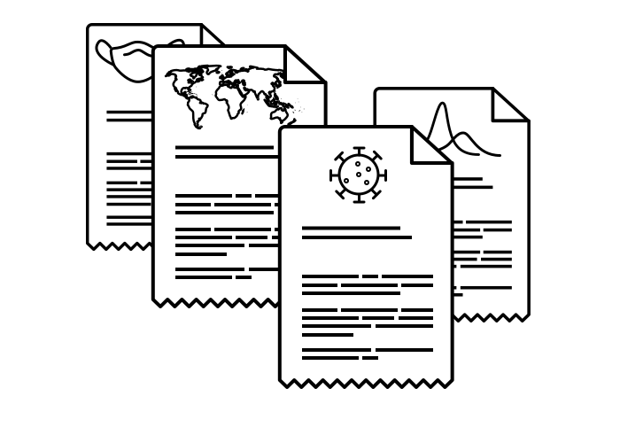

Since the start of COVID-19, a dedicated global network of volunteers has been creating, updating, and translating Wikipedia articles with vital information about the pandemic. These articles have been viewed more than 240 million times by people around the world. Explore the data to see how people are using Wikipedia to share and find reliable information during this unprecedented time. The data below are for strongly-related COVID-19 articles only.[1]
3,372 Wikipedia Articles
have been created about COVID-19

Many of the volunteer editors who create, review, and improve Wikipedia articles about COVID-19 have professional expertise in medicine and science. They often collaborate through groups such as WikiProject Medicine and a new offshoot specifically dedicated to the pandemic, WikiProject COVID-19. In India, a group of volunteers is sharing reliable, unbiased COVID-19 information on Wikipedia in several Indian languages. A new branch of WikiProject Medicine called SWASTHA (the Sanskrit word for health) has also been established, as well as a WikiProject India COVID-19 task force, which is creating and updating a database related to the coronavirus pandemic in India through Wikidata.
143 Languages
in which COVID-19 articles exist
340,137 Edits
in total have been made to COVID-19 articles, an average of 117 edits per hour since December 2019
34,832 Editors
have contributed to COVID-19 articles [2]
Data current as of March 30, 2020
240,259,888 Pageviews
of COVID-19 articles from around the world over time
:
Views of Wikipedia articles about COVID-19 often reflect major developments in the timeline of the pandemic. For example, on March 12, 2020, the day after the World Health Organization (WHO) classified COVID-19 as a pandemic, the main English Wikipedia article about the pandemic had over 1.4 million views alone, an increase of 73 percent from the day before the WHO’s announcement.[3]
Data current as of April 7, 2020
In depth
A look at the main "2019–20 coronavirus pandemic" English article
More than 140 Wikipedia entries redirect to this article
Languages
This article is available in 122 languages
Total Pageviews
This article has been viewed 38,066,404 times since March 1, 2020
Daily Pageviews
On average, this article has received 976,062 pageviews every day since March 1, 2020
Data current as of April 8, 2020
Use this data
Data from Wikipedia and other Wikimedia projects are open to anyone.
Organizations such as Google are already using data from Wikimedia projects to share information about the pandemic. Please contact us at partnerships@wikimedia.org if you need support using our data or would like to collaborate.
Learn more about the Wikimedia Foundation’s response to COVID-19.
References
[1] Strongly-related Wikipedia articles include all COVID-19 related pages except for the humans related ones (e.g. Tom Hanks). See the methodology for culling this list of articles here.
[2] This statistic reflects the sum of both registered and unregistered Wikipedia editors.
[3] The WHO declared COVID-19 a pandemic on March 11, 2020. On March 10, 2020, the main English pandemic article had 810,573 views, compared to 1,403,079 views on March 12, 2020 (see data here).
*Sources: New York Times; Axios; World Health Organization
Connect — Conecta
Stay up-to-date on our work.
Get email updates
Subscribe to news about ongoing projects and initiatives.
Contact a human
Questions about the Wikimedia Foundation or our projects? Get in touch with our team.
Follow
Help us unlock the world’s knowledge.
As a nonprofit, Wikipedia and our related free knowledge projects are powered primarily through donations.